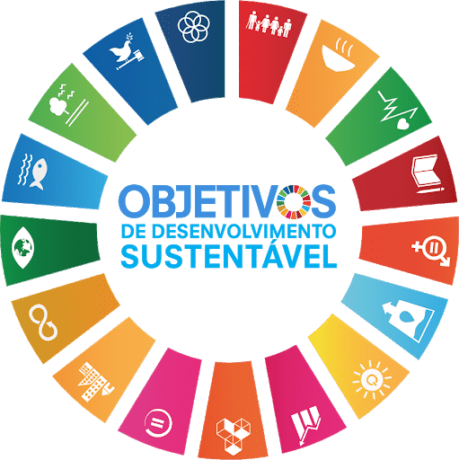

O que somos?
O MeIAjuda é um aplicativo baseado em Inteligência Artificial que realiza triagens iniciais de sintomas, fornece orientações básicas e encaminha os usuários para a unidade de saúde mais próxima ou para especialistas conforme necessário. Facilita o alívio provisório dos sintomas e otimiza o tempo e a qualidade do atendimento médico.
Conheça o MeIAjuda

Alinhamento com as ODS
O MeIAjuda contribui para diversos Objetivos de Desenvolvimento Sustentável como a ODS 3 voltada para Saúde e Bem-estar; a ODS 10 que busca a Redução das Desigualdades e parcialmente a ODS 16 para a Paz, Justiça e Instituições Eficazes .
Conheça o MeIAjuda